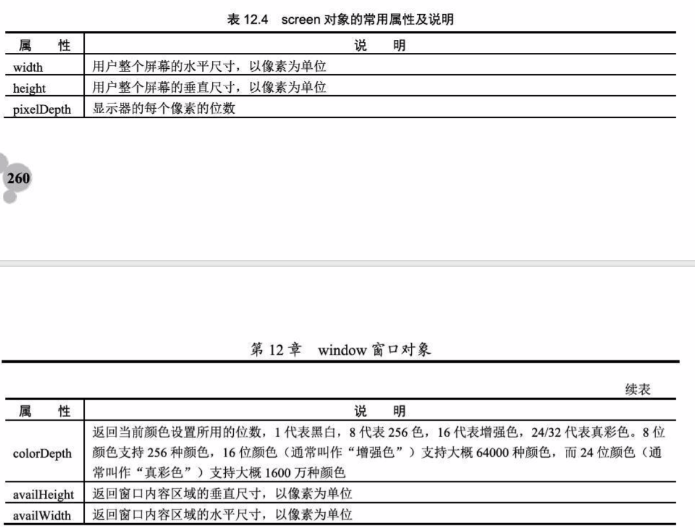

12.1、window对象
12.1.1、window对象的属性
12.1.2、window对象的方法
12.1.3、window对象的使用
在HTML中，JavaScript允许使用一个字符串来给窗口命名，也可以使用一些关键字来
代替某些特定的窗口。例如，使用self代表当前窗口（window）；parent代表父级窗口等。
12.2、对话框
12.2.1、警告对话框
12.2.2、询问回答对话框
12.2.3、提示对话框
12.3、窗口的打开和关闭
12.3.1、打开窗口:open(url/src)
12.3.2、关闭窗口:open对象.close()
12.4、控制窗口
12.4.1、移动窗口:moveTo(x,y),resizeTo(x,y)改变窗口大小
1、screen对象

12.4.2、改变窗口大小:resizeBy(x,y)
12.4.3、窗口滚动:scroll(x,y)、scrollTo(x,y)、scrollBy(x,y)
12.4.4、访问窗口历史:window.history
12.4.5、控制窗口状态栏
1、window.status方法：改变状态栏中的文字，设置或给出浏览器窗口中状态栏的当前显示信息;
2、window.defaultstatus方法：与status方法的区别在于信息显示时间的长短；
defaultstatus方法的值会在任何时间显示，而status方法的值只在某一个事件发生的瞬间显示;
12.4.6、窗口时间与超时设定
setTimeout()用于设置一个超时，以便在将来的某一个时间执行某一段代码；
setInterval()用于设置一个定时器任务，隔多少时间执行一段代码；
clearTimeout(timer)可以在超时事件未执行前中止该超时设置；
12.5、窗口事件
12.5.1、通用窗口事件
12.5.2、扩展窗口事件
12.6、IE浏览器窗口扩展
12.6.1、模式窗口：showModalDialog()
12.6.2、无模式窗口:showModelessDialog
12.6.3、弹出窗口：showModalDialog(url,...)